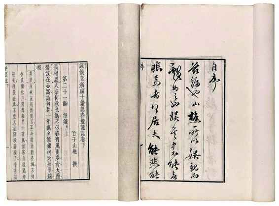
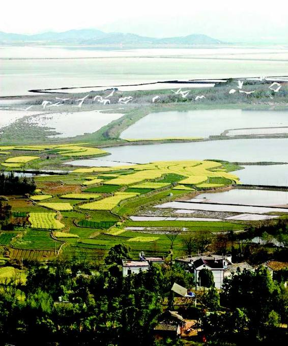
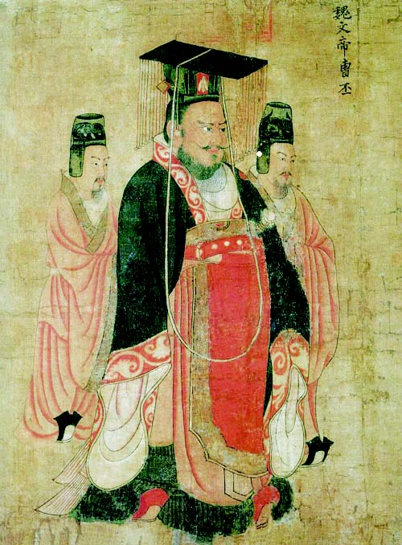
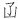
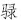
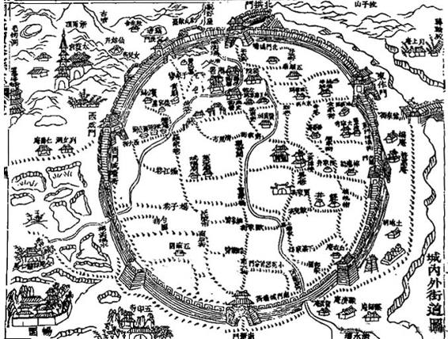
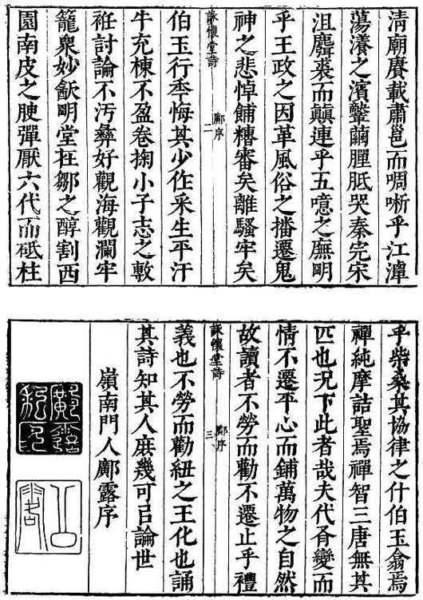

关于阮大铖，我有把握讲两点：首先，他肯定是历史上一个丑类；其次，他又肯定因丑类的缘故遭遇了严重偏见。人们对前者不乏了解，对后者却几无所知。长久以来，大家只记得他是奸臣，使阮大铖三个字被“奸臣”所整除，其余则隐匿不见、遗忘殆尽。故而，本文既要说说一个丑类，也打算谈谈这个丑类所受的偏见。
我们从其籍贯讲起。在《明史》“奸臣传”中，马士英与阮大铖作为有明一代第九、第十位大奸臣，双双联袂登场：
马士英，贵阳人。万历四十四年，与怀宁阮大铖同中会试。[3]
说他是怀宁人。自《明史》以阮大铖为怀宁人，此说即为主导。如《小腆纪传》阮大铖传：
阮大铖，字圆海，怀宁人。万历丙辰，与马士英同年中会试。[4]
明显承自《明史》。但这错误不自《明史》始，与阮大铖同时代的人，已认他是怀宁人。例如，张岱《石匮书后集》阮大铖传写道：
阮大铖，怀宁人；万历丙辰进士。[5]
张岱当年在南京与阮大铖颇有交谊，彼此熟识，居然也以为他是怀宁人。
然而，这是错的。民国四年《怀宁县志》选举表云：“大铖为桐城人，《太学题名碑》可考，《明史》误以大铖为怀宁人，附识于此以正之。”[6]阮大铖是桐城人；更确切地说，桐城人、怀宁籍。古时“籍”与今天相反，今指籍贯、祖籍，古时指隶籍何地，相当于户口所在地，而“某地人”反倒指的是籍贯和祖籍。所以，说阮大铖怀宁人，肯定错了。
《明史》乃官史。国家为修官史，专立史馆，馆内延揽的均为饱学之士，又在广征史料、组织完备基础上，经年累月研究、编撰、芟定，通常是严谨慎重的。但我们认为，至少在涉及阮大铖时，《明史》或史馆诸人，态度有失严谨。他们显然未做起码的核实、征考工作，当时，明明有材料可落实阮大铖是桐城人，这些材料也并不难找，结果却草率写成怀宁人。原因我们并不真正了解，作为可能的推测，很难说与阮大铖“奸臣”、“小人”的定位无关。对“奸臣”、“小人”，心里先存轻慢鄙薄，认为对他把握住大节即可，细枝末节则无须严审。这是不是一种偏见，或是否反映了一种偏见呢？
桐城、怀宁相距不远，同属安庆府；桐城人也罢，怀宁人也罢，差别似乎很小，马虎一点的人或认为，些许之误无关紧要。事情却不这么简单。以阮大铖为怀宁人，会造成他身世以及生平思想变化方面诸多盲点、空白区。怀宁、桐城虽距不远，意义有很大不同。明清两代，尤其明末清初这一段，桐城在中国政治文化地理上是特殊的地点，政治、学术和文学都俊彦辈出，形成一个人数众多、持续长久的桐城士夫群落。阮大铖不单是其中一员，他的社会生涯及人际交往更与之密不可分。他好些事情都有桐城背景，例如与钱秉镫、方以智的关系（这两位都是桐城人）。尤其是决定他一生的“党争”问题，即由桐城渊源而来——当初，若非与左光斗的同乡之谊，阮大铖与东林未必至有龃龉。总之，失掉桐城背景，他身上有很多地方我们看不清，也解释不了。
阮大铖曾祖名阮鹗，嘉靖间官至右副都御史。与他同时代，后于隆庆年间任内阁首辅的李春芳（即《南渡录》《三垣笔记》等书作者李清的高祖），写有《阮公墓志铭》。文中说：

《咏怀堂新编十错认春灯谜记》
阮大铖戏剧史地位十分重要。阮氏家班水准首屈一指，且只演阮大铖本人剧目，恐怕是中国最早的集演创于一身的剧团。此为清末梦凤楼暖红室刊校本。

桐城风光
桐城有山有水，田园秀美。阮大铖诗法陶王孟谢，与其为人对不上号，从故乡风貌中或许可以求得一些解释。
《高逸图》（亦名《竹林七贤图》） 唐•孙让绘
著名的竹林七贤中，阮大铖的先人占了两位。阮咸是他直系之祖，阮籍则是阮咸的叔父。阮籍以《咏怀诗》垂史，阮大铖“咏怀堂”的名号，就是祖述着阮籍。

魏文帝曹丕
汉献帝建安末年，曹丕写过一卷《典论》，凡二十篇，别的都散佚了，只留下来一篇文学专论《论文》。其中对建安时期优秀作家做了概括和点评，此即“建安七子”，中国文学史因而出现第一个“相提并论”的作家群。“建安七子”中排第五的阮瑀，正是所知桐城阮氏最早的始祖。
晋黄门侍郎遥集自陈留受节镇皖，乐山之胜，因家焉。历唐讳枞江者以大将军显，宋讳师简者以进士显，文武后先辉映。[7]
这里将阮家始祖溯至晋代的阮遥集，说他受命镇皖，从陈留郡（今河南开封一带）迁桐城，因喜桐城山（“”读“偶”，桐城、溧阳、宜兴各有一处山[8]）风景，安家定居于此；传到唐代，出了一位大将军，名叫阮枞江；宋代又出一位进士，名叫阮师简。这些材料，应出于阮家提供，而李春芳加以照录。其中不少信息，对我们有用。比如阮大铖把剧本《牟尼合》冠以“遥集堂新编《马郎侠牟尼合记》”，这个“遥集堂”名号，显然是为纪念阮遥集而起。他还有一个书斋，名“咏怀堂”，大名鼎鼎的《咏怀堂诗集》即得名于此，而这个名号来自另一先祖，以下我们就会说到。
关于阮家先祖，若追溯得比阮遥集更早些，可阅阮氏后人阮易路于清代道光年间所修《阮氏宗谱》。其云：
七世阮咸，瑀长子熙子……传至三十世枞江。[9]
枞江，我们已知道是在唐代做大将军的那位，但这儿又出现三个名字：阮咸、阮瑀、阮熙，他们又是谁？先说阮瑀。魏文帝曹丕有一名篇《典论•论文》，其中说：
今之文人，鲁国孔融文举，广陵陈琳孔璋，山阳王粲仲宣，北海徐干伟长，陈留阮瑀元瑜，汝南应瑒德琏，东平刘桢公干。斯七子者，于学无所遗，于辞无所假，咸以自骋骥于千里，仰齐足而并驰。[10]
他说，当今文苑，有七人并驾齐驱，而阮瑀（表字元瑜）就在这七人之列。单这么讲，大概还引不起我们太多兴致，所以要明确一下——曹丕这段话，便是文学史上“建安七子”之说的出处；换言之，所知最早的阮大铖始祖，乃是“建安七子”之一阮瑀。
接着讲阮咸。由《阮氏宗谱》“瑀长子熙子”这句，知阮咸系阮瑀长子阮熙所出，亦即阮瑀之孙。但仅仅如此么？阮咸自己在历史上有何名堂没有？我们在《晋书》中找到阮咸的传记，且摘数段：
咸字仲容。父熙，武都太守。咸任达不拘……[11]
宗谱无误，阮咸的确是阮熙之子、阮瑀之孙。他以“任达不拘”出名，喜欢、擅长两件事，音乐和饮酒：
咸妙解音律，善弹琵琶。虽处世不交人事，惟共亲知弦歌酣宴而已。[12]
下面是他惊世骇俗举止中的一个：
宗人间共集，不复用杯觞斟酌，以大盆盛酒，圆坐相向，大酌更饮。时有群豕来饮其酒，咸直接去其上，便共饮之。[13]
一群猪跑来喝他的酒，他为之由衷高兴，骑着猪，与它们抱头共饮。魏晋有著名的“竹林七贤”，到《世说新语》里找一找，从中可发现阮咸的大名——没错，他就是“竹林七贤”的一员。不但如此，我们还得提到七贤中另一位，随嵇康之后排名第二的阮籍。《晋书》阮咸传：
与叔父籍为竹林之游，当世礼法者讥其所为。[14]

明清桐城县图
阮大铖，桐城人。十一岁或更晚，他才迁居怀宁。他好些事情都有桐城背景，尤其是决定他一生的“党争”问题，即以桐城为渊源。

《咏怀堂诗集》
崇祯八年刊本，亦即阮大铖避乱于南京的第二年。阮大铖本身即出版家，此书或为他亲自监印，版刻之佳，绝然上品。
是的，阮籍、阮咸乃是叔侄。换言之，阮籍也是阮瑀之子、阮熙的兄弟。实际上，前引李春芳《阮公墓志铭》那段话前头，就有“系出步兵”几个字（阮籍官步兵校尉，史称阮步兵），我们卖个关子，故意隐去，现在才来抖这个“包袱”。
至此，对阮大铖的根源我们总算摸清——具体讲，桐城阮家是阮咸这支的嗣息，在晋代，由阮咸之后阮遥集从陈留迁至桐城——他祖上，有一人厕身“建安七子”，两位名列“竹林七贤”。如此灿然的家史，古今可得几例？阮大铖自己也十分引以为荣，前曾说他另有一个书斋名号“咏怀堂”，正是暗中祖述阮籍。阮籍在文学史上，以《咏怀诗》垂世。《晋书》阮籍传：“籍能属文，初不留意。作《咏怀诗》八十余篇，为世所重。”[15]
由这根源，我们更知道以阮大铖为怀宁人，是必须澄清的错误，它在多方面使我们失去阮大铖的端绪。我们虽诧异阮瑀、阮籍、阮咸等逸尘超俗的名字后面，最终尾随一个猥劣的后裔，却也不禁感到，阮大铖那不世出的才情禀赋，终有了可以解释的泉源。在他们之间做这种勾连，貌似是想象，其实有很坚实的事实依据：阮咸有音乐天赋，是古代音乐史的重要人物，无独有偶，其若干代之后人阮大铖，偏偏也具有同样的极特出的禀赋。阮大铖戏曲独步天下，最重要原因不在文学上（尽管其剧作在文学上也极出色），而在音律的精通，为此他很骄傲地将自己置于汤显祖之上。阮籍咏怀诗流芳千古，阮大铖以咏怀堂自命，似乎托祖自荫，其实不然，《咏怀堂诗集》艺术质地丝毫不令乃祖蒙羞，而配得上克绍其裘。我们的确鄙其为人，然而，对阮瑀、阮籍、阮咸到阮大铖的上千年血脉流淌，不得不叹作奇观，而视为中国最盛产艺术天才的家族。